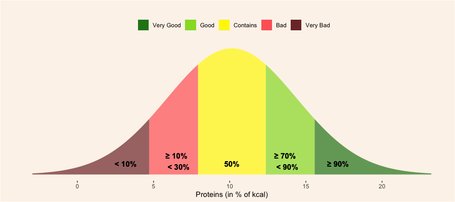

According to the Daily Reference Intakes (DRIs) established by the Japanese Dietetic Association (JDA), the ideal amount of proteins that have to be taken daily is located between 13% and 20% of the total amount of calories.
According to the JDA, such an amount aims to prevent the progression of life-style related deseases.
- Proteins are considered as a positive nutrient. Therefore, the score for proteins increases as long as the nutrient value is large.
- A product with an amount of proteins entering in the lower bound defined by the JDA (i.e. the kcal equivalent of proteins represent at least 13% of the total calories of the product), is credited with a grade of at least 75% for the proteins scoring section.
- A product with an amount of proteins greater than or equal to the upper bound defined by the JDA (i.e. the kcal equivalent of proteins represent at least 20% of the total calories of the product), is credited with a grade of at least 99% for the proteins scoring section.
